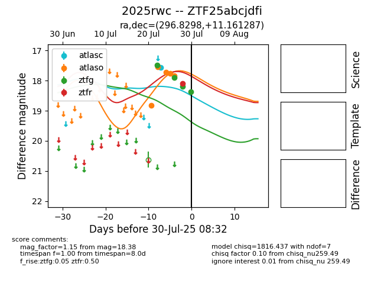

Target 2025rwc at 2025-07-30 08:32, see:
FINK: fink-portal.org/2025rwc
Lasair: lasair-ztf.lsst.ac.uk/objects/2025rwc
ALeRCE: alerce.online/object/2025rwc
TNS: wis-tns.org/object/2025rwc
YSE: ziggy.ucolick.org/yse/transient_detail/2025rwc
alt names
ZTF25abcjdfi (ztf,fink)
2025rwc (tns,yse)
coordinates:
equatorial (ra, dec) = (296.8298,+11.16129)
galactic (l, b) = (49.3358,-7.03822)
photometry
last atlasc=17.57, atlaso=17.84, ztfg=18.38, ztfr=18.09
1 atlasc, 5 atlaso, 4 ztfg, 1 ztfr detections
